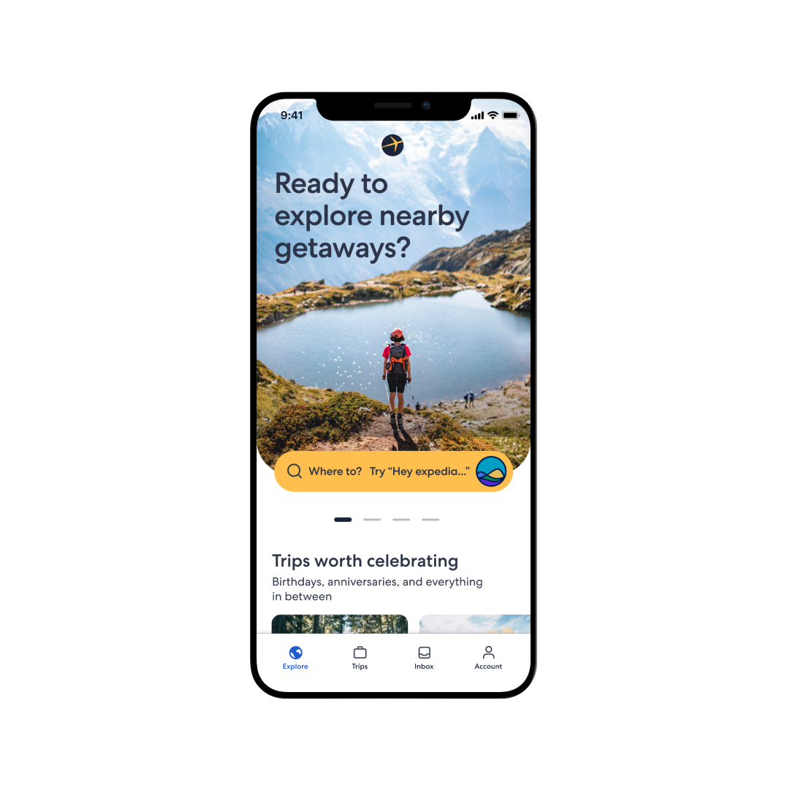
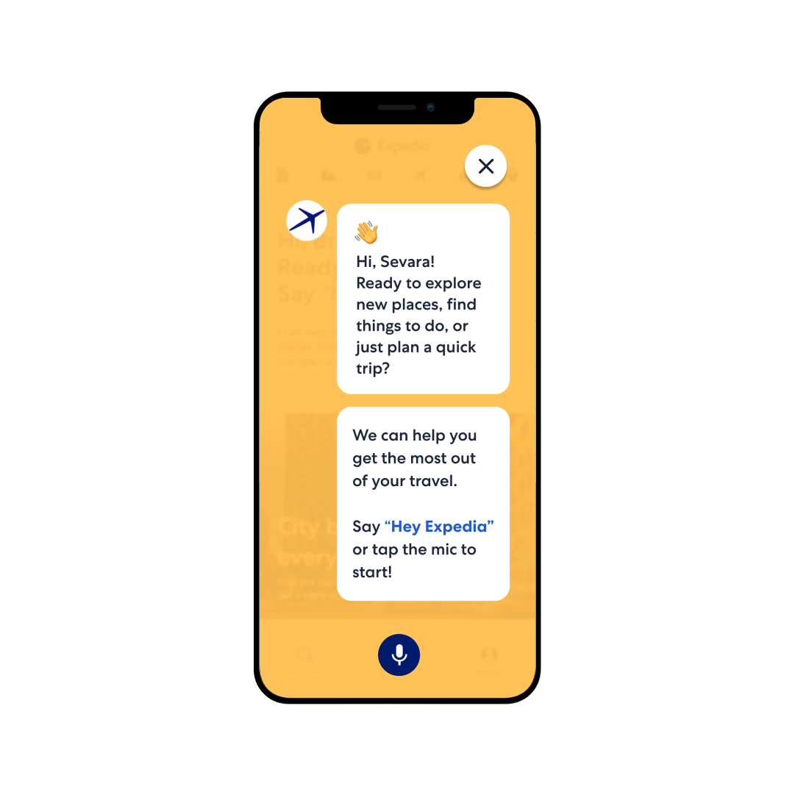
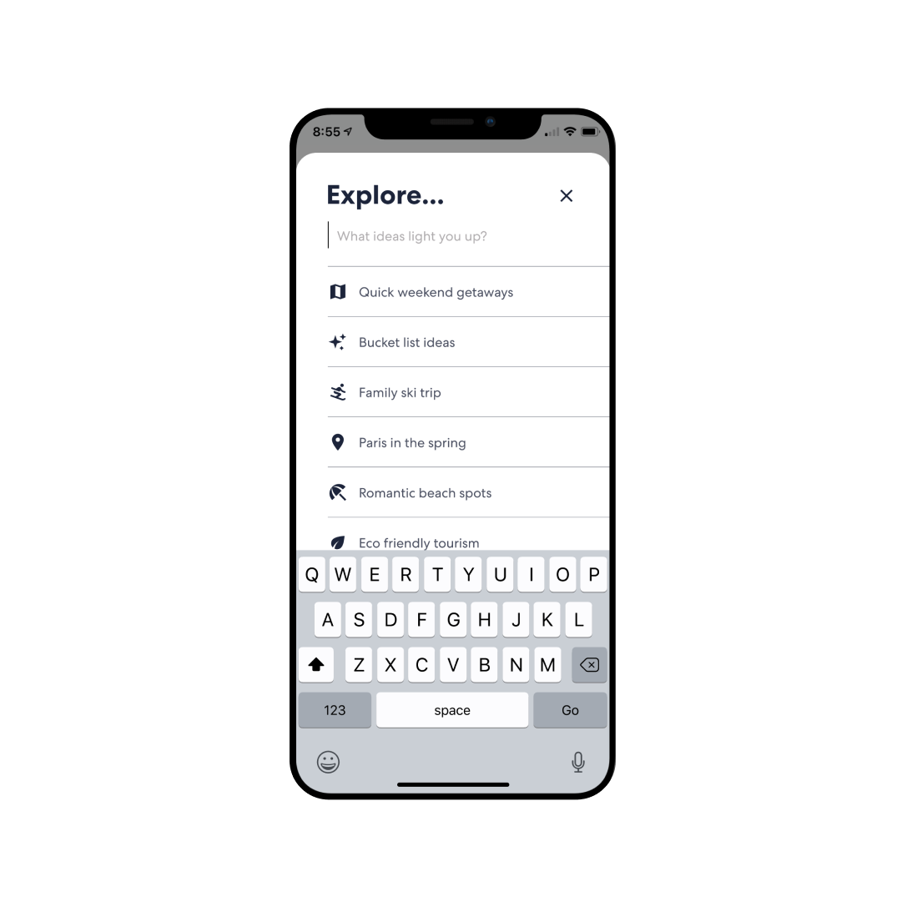
Overview
In 2021 we were asked to explore new interaction methods for helping customers browse and book within the Expedia app—months before ChatGPT made conversational AI mainstream. The team prioritized the highest-impact implementations, covering two new interaction types: natural-language text entry and voice.
First Explorations
Our earliest concepts pushed boundaries—hero sliders that surfaced AI recommendations on the home screen, full takeovers that transformed the browse experience, and broad text-entry fields that invited natural-language search for the first time.
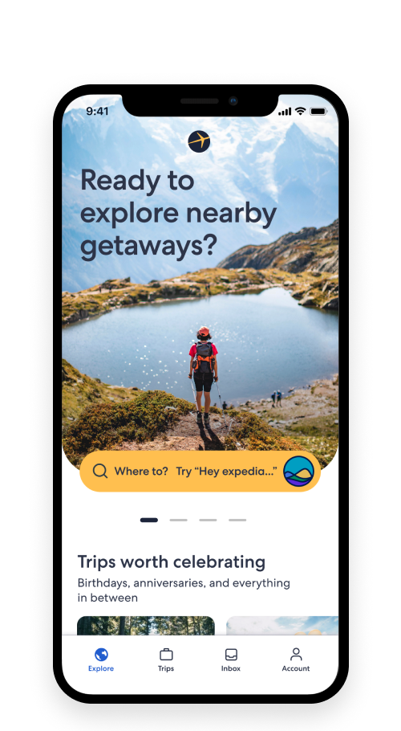
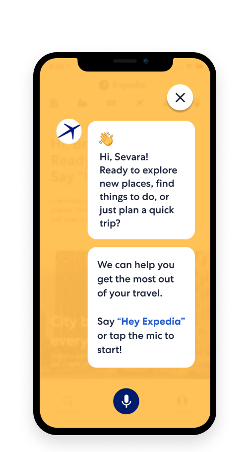
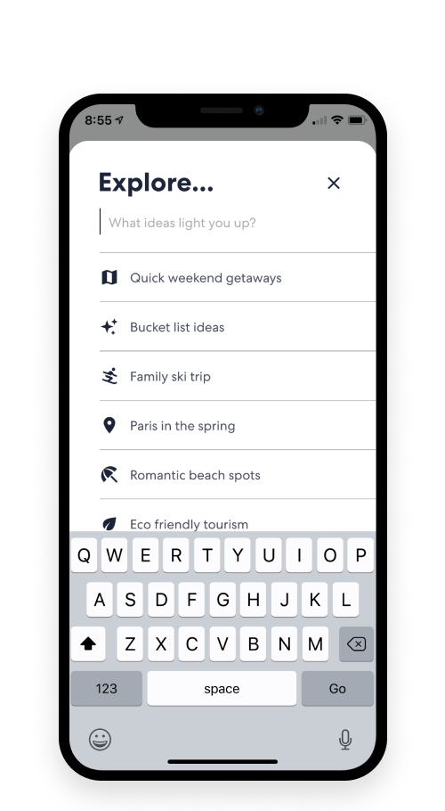
Refined Entry Points
As the work matured we explored how intelligence could integrate more seamlessly—lodging-search takeovers that felt native to the existing flow, quick-link conversation starters that lowered the barrier to entry, and contextual prompts that appeared at exactly the right moment.
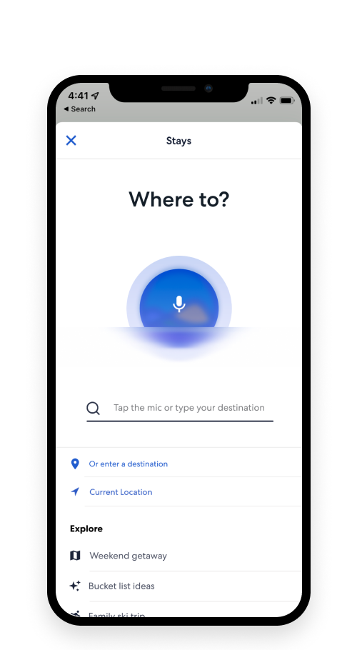
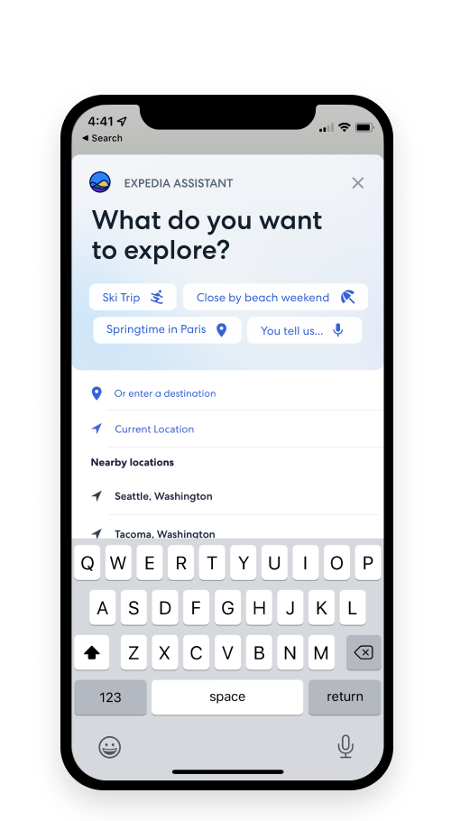
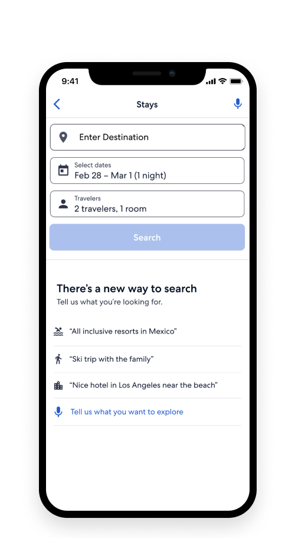
Voice Interactions
Voice wasn’t just another input method—it was woven throughout the experience. From searching amenities by simply asking, to getting tailored recommendations during the booking flow, voice became a thread connecting every touchpoint.
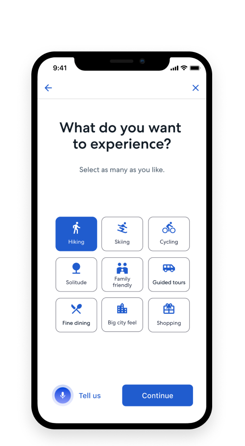
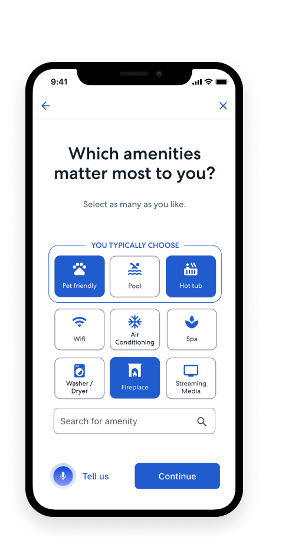
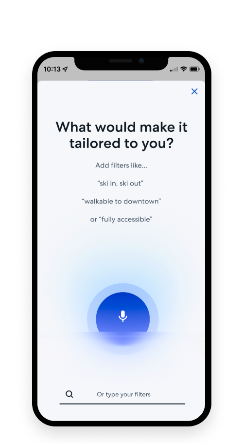
Tailored Discovery
The real magic happened when AI met content. Capsule-style browsing for quick inspiration, immersive destination guides that felt like editorial, and suggested itineraries that adapted to each traveler’s preferences—personalization that felt personal, not algorithmic.
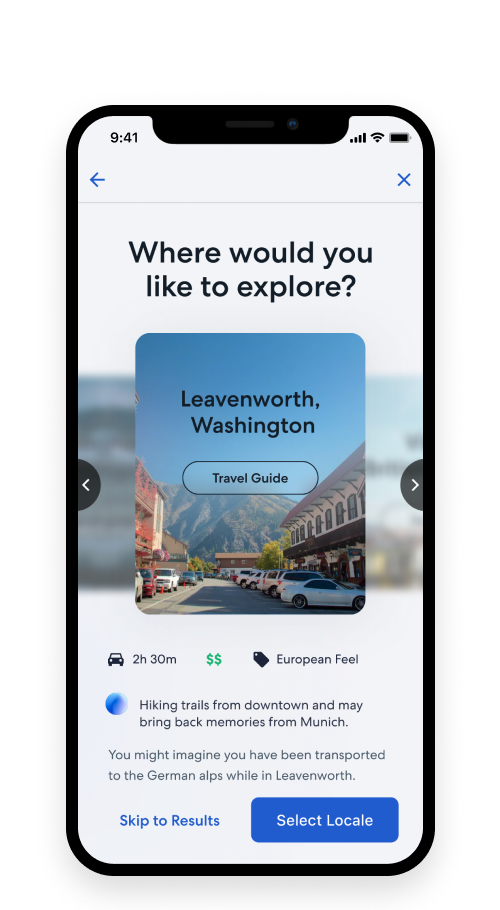
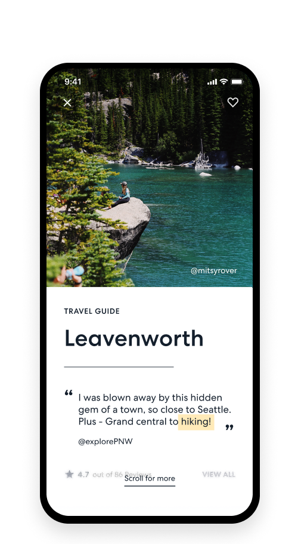
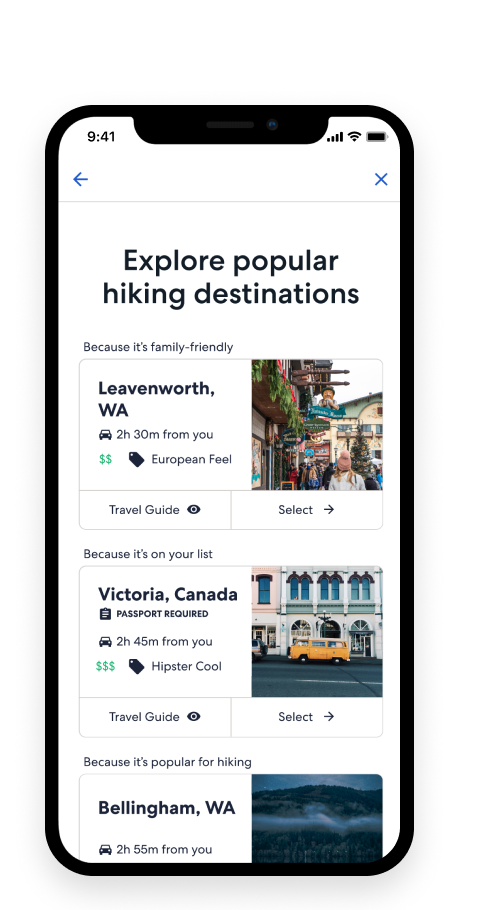
Dark Mode
A fully realized dark mode that went beyond color inversion. We used elevation, transparency, and subtle gradients to create depth—turning the late-night travel browsing session into something atmospheric and inviting.
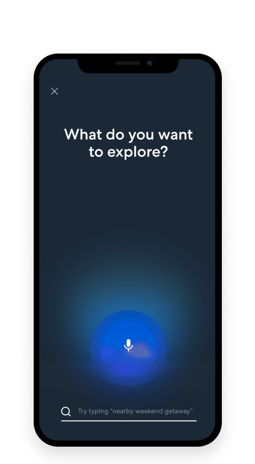
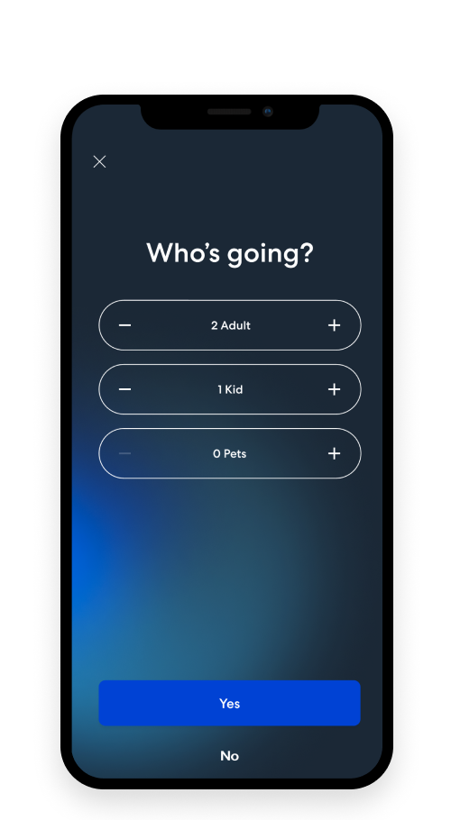
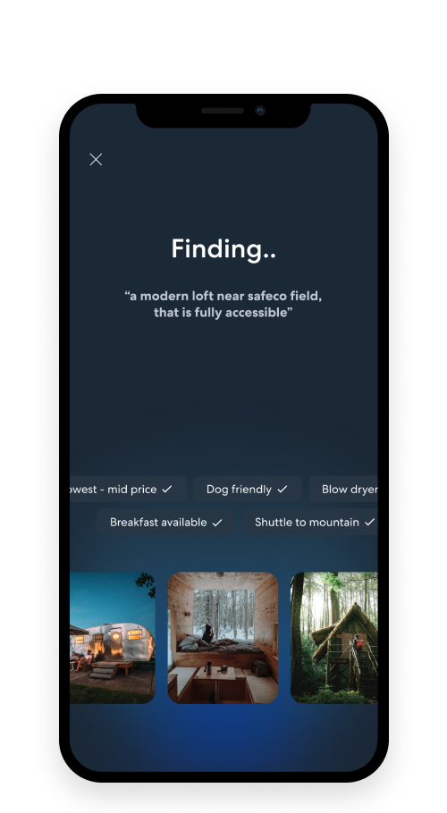
Outcome
We built the future before the future arrived.
What started as exploratory research became the foundation for Expedia’s current AI-powered features. The patterns, components, and interaction models we established in 2021–2022 are now integrated across the platform—years before the industry caught up.